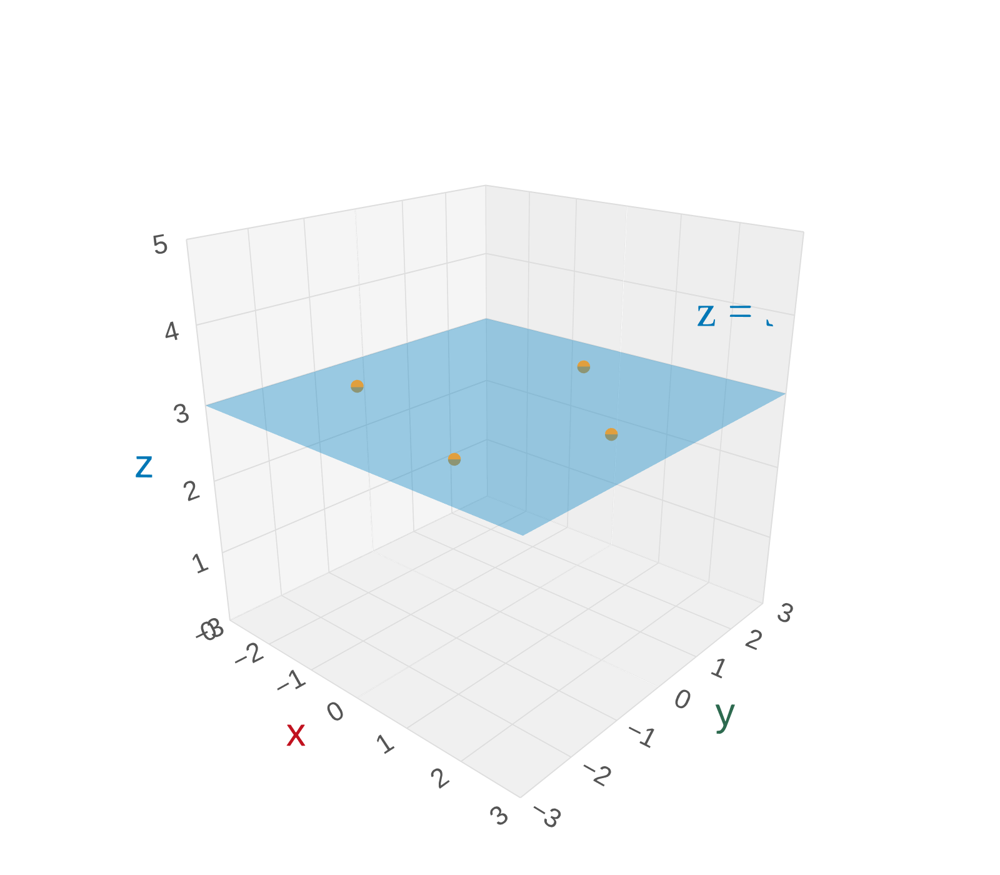
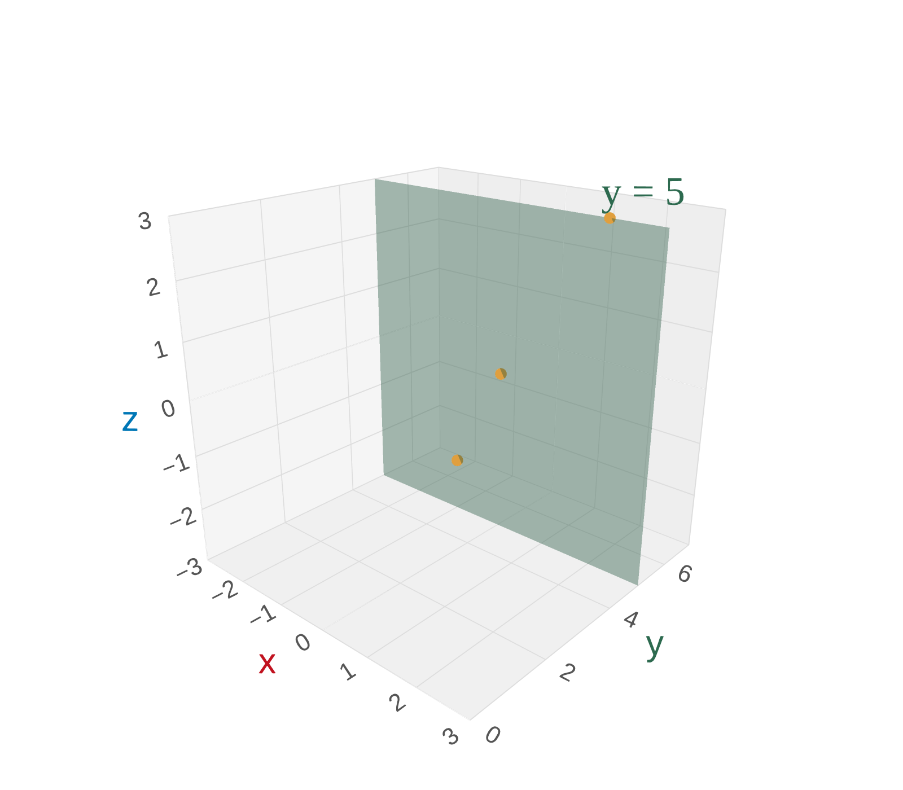
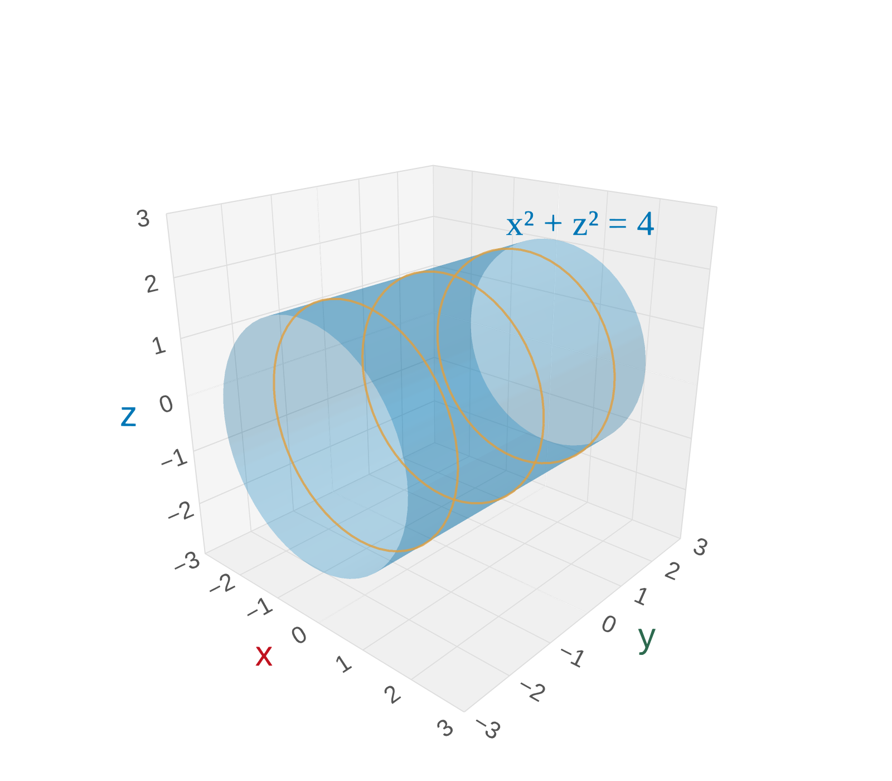
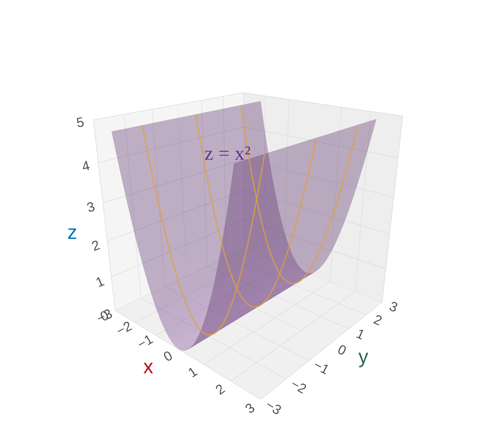
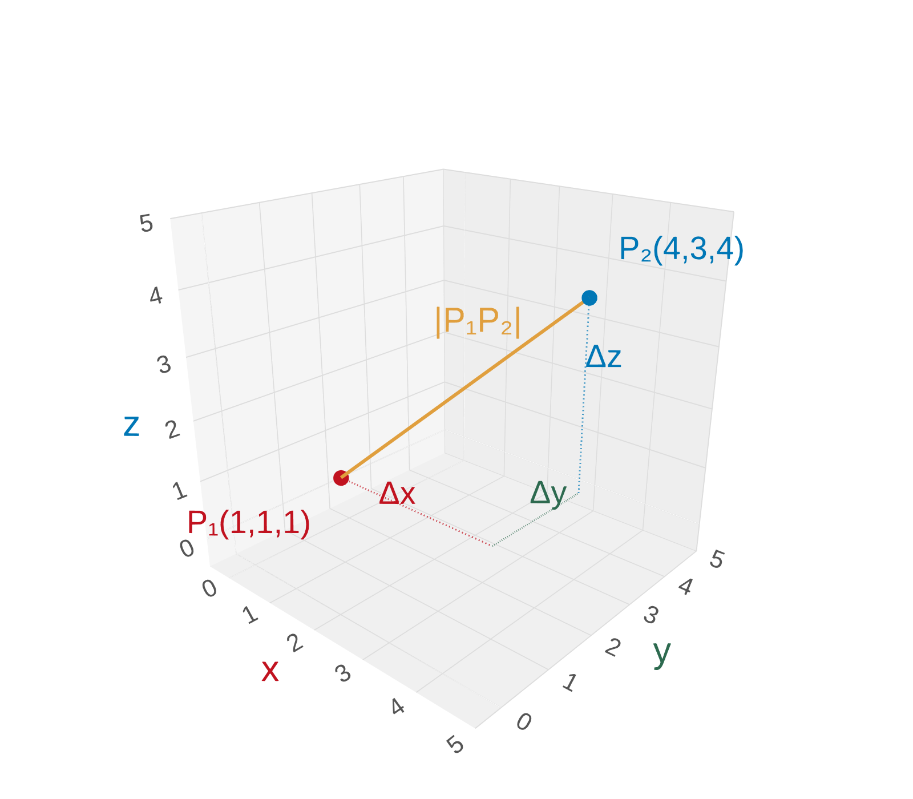
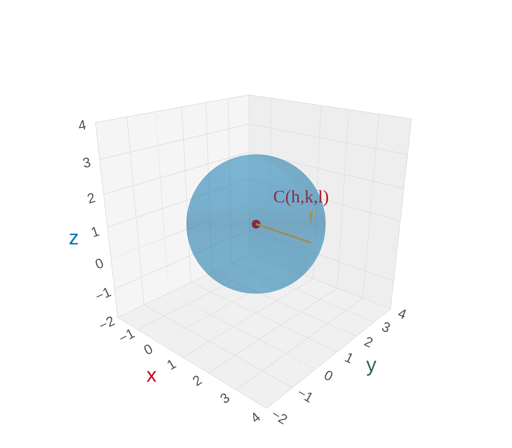

Ordered Triples in 3D
We locate points in space using ordered triples \((a, b, c)\):
- \(a\) = x-coordinate
- \(b\) = y-coordinate
- \(c\) = z-coordinate
We use a right-handed coordinate system.

The Right-Hand Rule
Curl your right hand from the positive x-axis toward the positive y-axis.
Your thumb points in the direction of the positive z-axis.
Classroom Coordinates
If the lower-left corner at the front of the classroom is the origin, with coordinate axes along the edges formed by the floor and walls, what are the approximate coordinates (in feet) of:
- The projector?
- The nearest door in Murphy Library?
Estimate the coordinates of each object.
The projector: \((15, 15, 9)\)
Nearest door in Murphy Library: \((300, -36, -25)\) — negative coordinates mean behind/below the origin
Coordinate Planes
The three coordinate planes divide space:
- xy-plane: \(z = 0\) (the floor)
- xz-plane: \(y = 0\) (left wall)
- yz-plane: \(x = 0\) (front wall)
The Eight Octants
The coordinate planes divide \(\mathbb{R}^3\) into 8 octants.
The first octant has all positive coordinates: \((+, +, +)\)
| Octant | x | y | z |
|---|---|---|---|
| I | + | + | + |
| II | \(-\) | + | + |
| III | \(-\) | \(-\) | + |
| IV | + | \(-\) | + |
\\[2pt]\small ... and 4 more below the xy-plane
Curves vs. Surfaces
In 2D: an equation in \(x, y\) describes a curve in \(\mathbb{R}^2\)
In 3D: an equation in \(x, y, z\) describes a surface in \(\mathbb{R}^3\)
Sketching Planes
Identify and sketch the surfaces \(z = 3\) and \(y = 5\).
Sketch each plane in a 3D coordinate system.
\(z = 3\): a horizontal plane — all points whose z-coordinate equals 3. The plane floats 3 units above the xy-plane.
\(y = 5\): a vertical plane — all points whose y-coordinate equals 5. The plane is parallel to the xz-plane, shifted 5 units in the y-direction.


A Cylinder
Identify and sketch the surface \(x^2 + z^2 = 4\).
What does this equation look like in 2D? What happens in 3D?
Compare to \(x^2 + y^2 = r^2\) — this is a circle of radius \(r\). Here \(x^2 + z^2 = 4\) is a circle of radius 2 in the \(xz\)-plane.
Since \(y\) is missing, it can be anything — the circle extends infinitely along the \(y\)-axis.
Result: a circular cylinder of radius 2, centered on the \(y\)-axis.

Bonus: Parabolic Cylinder
What about \(z = x^2\)?
Sketch z = x-squared in the xz-plane, then think about what happens in 3D.
In 2D, \(z = x^2\) is a parabola in the \(xz\)-plane.
\(y\) is free — extends infinitely in the \(y\)-direction. Result: a parabolic cylinder.

Key Idea: Cylinders
When an equation is missing one variable in \(\mathbb{R}^3\), the graph is a cylinder — the 2D curve extended along the missing axis.
\(x^2 + z^2 = 4\)
Missing \(y\) \(\Rightarrow\) circular cylinder along \(y\)-axis
\(z = x^2\)
Missing \(y\) \(\Rightarrow\) parabolic cylinder along \(y\)-axis
Distance Formula in 3D
The distance \(|P_1 P_2|\) between points \(P_1(x_1, y_1, z_1)\) and \(P_2(x_2, y_2, z_2)\) is:
\[|P_1 P_2| = \sqrt{(x_2 - x_1)^2 + (y_2 - y_1)^2 + (z_2 - z_1)^2}\]
This is the natural extension of the 2D distance formula — just add the \(z\)-component under the radical.

Equation of a Sphere
What is the equation for a sphere of radius \(r\) centered at \(C(h, k, l)\)?
Use the distance formula with |PC| = r. Square both sides.
We want all points \(P(x,y,z)\) so that \(|PC| = r\). Apply the distance formula:
\[\sqrt{(x-h)^2 + (y-k)^2 + (z-l)^2} = r\]
Square both sides:
\[(x-h)^2 + (y-k)^2 + (z-l)^2 = r^2\]

Describing a 3D Region
Describe and sketch the region in \(\mathbb{R}^3\) described by:
\[x^2 + z^2 \leq 25, \quad 0 \leq y \leq 2\]
Start with the 2D circle in the xz-plane. Then think about what the cylinder looks like. Finally, apply the y-bounds.
Start with \(x^2 + z^2 \leq 25\): a solid disk of radius 5 in the \(xz\)-plane. As a cylinder in 3D, it extends infinitely in the \(y\)-direction.
\(0 \leq y \leq 2\) chops the cylinder between planes \(y = 0\) and \(y = 2\).
Result: A circular "puck" of radius 5, height 2, centered on the \(y\)-axis.

Section 12.1 Summary
Ordered triples \((x, y, z)\) in \(\mathbb{R}^3\). Right-hand rule for orientation.
\(xy\)-plane (\(z=0\)), \(xz\)-plane (\(y=0\)), \(yz\)-plane (\(x=0\)). 8 octants.
\(|P_1P_2| = \sqrt{(\Delta x)^2 + (\Delta y)^2 + (\Delta z)^2}\)
\((x-h)^2 + (y-k)^2 + (z-l)^2 = r^2\)
Big idea: In 3D, an equation missing one variable describes a cylinder — the 2D curve extended infinitely along the missing axis.
Homework
Section 12.1
2, 9, 11, 13a, 17, 19, 31, 35, 39, 41, 43, 45